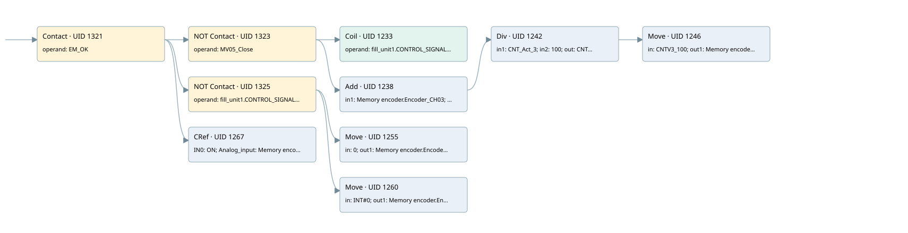

mv05 data management
analog input conversion · 검색 색인 순서 35 · 원본 내부 NID 추정 33
백업 PLF 원본의 3149303 바이트 위치에서 복원한 XML. 검색 문서 1765의 객체 키 16102200316b000000000000와 연결했다. 이름 해석 22/22개. 남은 RefId는 상수 또는 미해석 참조다.
연결 구조 다시 그리기
원본 Part/PCon/Wire를 이용한 연결도다. TIA 화면의 래더 배치 또는 실행 결과를 재현한 그림은 아니다. 핀 연결은 아래 표와 원본 XML을 기준으로 읽는다. 노드 위에 마우스를 두면 피연산자 이름을 볼 수 있다.

접점·코일·블록과 피연산자
| Part UID | Gate | Negated 핀 | 연결 피연산자 |
|---|---|---|---|
| 1321 | Contact | operand = EM_OK | |
| 1323 | Contact | operand | operand = MV05_Close |
| 1233 | Coil | operand = fill_unit1.CONTROL_SIGNALS.SW_GATE3 | |
| 1238 | Add | in1 = Memory encoder.Encoder_CH03; in2 = fill_unit1.ACT_CNTV3; out = CNT_Act_3 | |
| 1242 | Div | in1 = CNT_Act_3; in2 = 100; out = CNTV3_100 | |
| 1246 | Move | in = CNTV3_100; out1 = Memory encoder.Encoder_CH03_10 | |
| 1325 | Contact | operand | operand = fill_unit1.CONTROL_SIGNALS.SW_GATE3 |
| 1255 | Move | in = 0; out1 = Memory encoder.Encoder_CH03_10 | |
| 1260 | Move | in = INT#0; out1 = Memory encoder.Encoder_CH03 | |
| 1267 | CRef | 호출 참조: Signal linearization; IN0 = ON; Analog_input = Memory encoder.Encoder_CH03_10; Coeff = Coeff.COEFF_TRASM_MV05; Zero = Coeff.ZERO_TRASM_MV05; OutValue = Data.Pot_MV05; Out_of_range = Allarm.Pot_MV05_OFR |
접점 경로를 펼친 조건식
Contact·O/A·비교기의 원본 연결을 읽기 쉽게 펼친 보조 해석이다. POWER는 전원 레일 시작을 뜻한다. 호출 블록·에지·타이머의 내부 동작과 다중 쓰기 순서는 이 표로 실행 검증하지 않았다. 미해석 핀과 RefId는 원문 연결표에서 확인한다.
| UID | 동작 | 대상 | 원본 접점 경로 | 내용 |
|---|---|---|---|---|
| 1233 | Coil | fill_unit1.CONTROL_SIGNALS.SW_GATE3 | (EM_OK AND NOT [MV05_Close]) | 조건에 따른 Coil 기록 |
| 1246 | Move | Memory encoder.Encoder_CH03_10 | Div UID 1242.eno (블록 동작 확인) | Move 입력 CNTV3_100 |
| 1255 | Move | Memory encoder.Encoder_CH03_10 | (EM_OK AND NOT [fill_unit1.CONTROL_SIGNALS.SW_GATE3]) | Move 입력 0 |
| 1260 | Move | Memory encoder.Encoder_CH03 | (EM_OK AND NOT [fill_unit1.CONTROL_SIGNALS.SW_GATE3]) | Move 입력 INT#0 |
원본 배선 연결
| Wire UID | 동일 Wire 연결 끝점 |
|---|---|
| 1327 | Powerrail {} ↔ Part 1321.in |
| 1295 | ORef 1272 (EM_OK) ↔ Part 1321.operand |
| 1322 | Part 1321.out ↔ Part 1323.in ↔ Part 1325.in ↔ Part 1267.en |
| 21 | ORef 22 (MV05_Close) ↔ Part 1323.operand |
| 1324 | Part 1323.out ↔ Part 1233.in ↔ Part 1238.en |
| 1297 | ORef 1274 (fill_unit1.CONTROL_SIGNALS.SW_GATE3) ↔ Part 1233.operand |
| 1298 | ORef 1275 (Memory encoder.Encoder_CH03) ↔ Part 1238.in1 |
| 1299 | ORef 1276 (fill_unit1.ACT_CNTV3) ↔ Part 1238.in2 |
| 1301 | Part 1238.eno ↔ Part 1242.en |
| 1300 | Part 1238.out ↔ ORef 1277 (CNT_Act_3) |
| 1302 | ORef 1278 (CNT_Act_3) ↔ Part 1242.in1 |
| 1303 | ORef 1279 (100) ↔ Part 1242.in2 |
| 1305 | Part 1242.eno ↔ Part 1246.en |
| 1304 | Part 1242.out ↔ ORef 1280 (CNTV3_100) |
| 1306 | ORef 1281 (CNTV3_100) ↔ Part 1246.in |
| 1307 | Part 1246.out1 ↔ ORef 1282 (Memory encoder.Encoder_CH03_10) |
| 1309 | ORef 1283 (fill_unit1.CONTROL_SIGNALS.SW_GATE3) ↔ Part 1325.operand |
| 1326 | Part 1325.out ↔ Part 1255.en ↔ Part 1260.en |
| 1310 | ORef 1284 (0) ↔ Part 1255.in |
| 1311 | Part 1255.out1 ↔ ORef 1285 (Memory encoder.Encoder_CH03_10) |
| 1312 | ORef 1286 (INT#0) ↔ Part 1260.in |
| 1313 | Part 1260.out1 ↔ ORef 1287 (Memory encoder.Encoder_CH03) |
| 1315 | ORef 1289 (ON) ↔ Part 1267.IN0 |
| 1316 | ORef 1290 (Memory encoder.Encoder_CH03_10) ↔ Part 1267.Analog_input |
| 1317 | ORef 1291 (Coeff.COEFF_TRASM_MV05) ↔ Part 1267.Coeff |
| 1318 | ORef 1292 (Coeff.ZERO_TRASM_MV05) ↔ Part 1267.Zero |
| 1319 | Part 1267.OutValue ↔ ORef 1293 (Data.Pot_MV05) |
| 24 | Part 1267.Out_of_range ↔ ORef 23 (Allarm.Pot_MV05_OFR) |
식별자 해석 근거 22개
| ORef UID | RefId | 이름 | IdentXmlPart 파일 | 해석 방법 |
|---|---|---|---|---|
| 1272 | 173 | EM_OK | 0678-IdentXmlPart.xml | UID/RID + search-text + NID agreement |
| 22 | 447 | MV05_Close | 0678-IdentXmlPart.xml | UID/RID + search-text + NID agreement |
| 1274 | 345 | fill_unit1.CONTROL_SIGNALS.SW_GATE3 | 0676-IdentXmlPart.xml | UID/RID + search-text + NID agreement |
| 1275 | 201 | Memory encoder.Encoder_CH03 | 0676-IdentXmlPart.xml | UID/RID + search-text + NID agreement |
| 1276 | 346 | fill_unit1.ACT_CNTV3 | 0676-IdentXmlPart.xml | UID/RID + search-text + NID agreement |
| 1277 | 200 | CNT_Act_3 | 0677-IdentXmlPart.xml | UID/RID + search-text + NID agreement |
| 1278 | 200 | CNT_Act_3 | 0677-IdentXmlPart.xml | UID/RID + search-text + NID agreement |
| 1279 | 211 | 100 | 0675-IdentXmlPart.xml | literal candidate: UID/RID/NID + nearby named declarations + search-text agreement |
| 1280 | 348 | CNTV3_100 | 0677-IdentXmlPart.xml | UID/RID + search-text + NID agreement |
| 1281 | 348 | CNTV3_100 | 0677-IdentXmlPart.xml | UID/RID + search-text + NID agreement |
| 1282 | 349 | Memory encoder.Encoder_CH03_10 | 0676-IdentXmlPart.xml | UID/RID + search-text + NID agreement |
| 1283 | 345 | fill_unit1.CONTROL_SIGNALS.SW_GATE3 | 0676-IdentXmlPart.xml | UID/RID + search-text + NID agreement |
| 1284 | 44 | 0 | 0675-IdentXmlPart.xml | literal candidate: UID/RID/NID + nearby named declarations + search-text agreement |
| 1285 | 349 | Memory encoder.Encoder_CH03_10 | 0676-IdentXmlPart.xml | UID/RID + search-text + NID agreement |
| 1286 | 327 | INT#0 | 0675-IdentXmlPart.xml | literal candidate: UID/RID/NID + nearby named declarations + search-text agreement |
| 1287 | 201 | Memory encoder.Encoder_CH03 | 0676-IdentXmlPart.xml | UID/RID + search-text + NID agreement |
| 1289 | 1 | ON | 0678-IdentXmlPart.xml | UID/RID + search-text + NID agreement |
| 1290 | 349 | Memory encoder.Encoder_CH03_10 | 0676-IdentXmlPart.xml | UID/RID + search-text + NID agreement |
| 1291 | 155 | Coeff.COEFF_TRASM_MV05 | 0676-IdentXmlPart.xml | UID/RID + search-text + NID agreement |
| 1292 | 156 | Coeff.ZERO_TRASM_MV05 | 0676-IdentXmlPart.xml | UID/RID + search-text + NID agreement |
| 1293 | 157 | Data.Pot_MV05 | 0676-IdentXmlPart.xml | UID/RID + search-text + NID agreement |
| 23 | 438 | Allarm.Pot_MV05_OFR | 0676-IdentXmlPart.xml | UID/RID + search-text + NID agreement |
검색 코드 보조 자료
참조 명칭을 찾기 위한 자료이며 실행 순서나 AND/OR 관계는 위 연결표로 확인한다.
"em_ok" "mv05_close" "fill_unit1".control_signals.sw_gate3 "fill_unit1".control_signals.sw_gate3 move 0 move int#0 "memory encoder".encoder_ch03 "memory encoder".encoder_ch03_10 "signal linearization" "on" "memory encoder".encoder_ch03_10 "coeff".coeff_trasm_mv05 "coeff".zero_trasm_mv05 "data".pot_mv05 "allarm".pot_mv05_ofr add "memory encoder".encoder_ch03 "fill_unit1".act_cntv3 div #cnt_act_3 100 move #cntv3_100 #cnt_act_3 #cntv3_100 "memory encoder".encoder_ch03_10